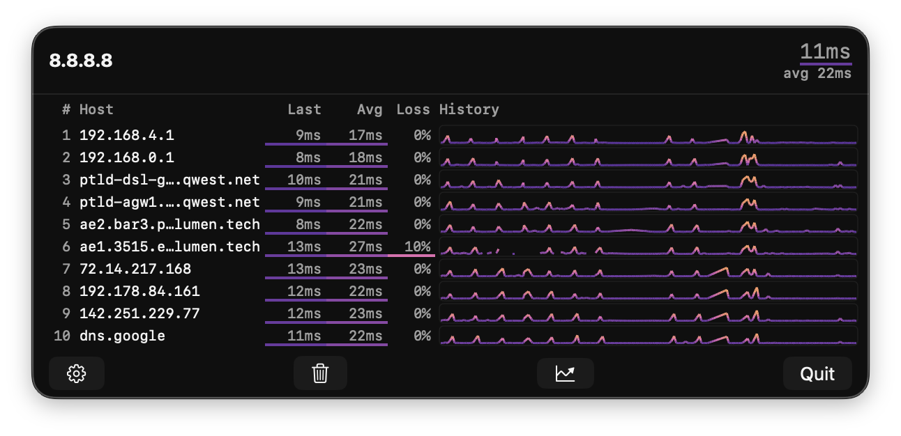

Frequently asked questions and contact info.
Click the TraceBar menubar icon to open the panel, then open Settings (gear icon or Cmd+,). Enter a hostname or IP address in the Target Host field and press Return.
Colors represent latency, with each color scheme mapping low-to-high latency across its own gradient. You can choose from multiple color schemes in Settings and adjust the latency scale threshold.
Some routers are configured not to respond to ICMP packets, so TraceBar will report 100% packet loss for those hops. This is normal and does not indicate a problem with your connection.

If you see regular spikes (roughly every 10–12 seconds) that affect every hop simultaneously, this is almost certainly Bluetooth coexistence. Modern Macs share radio resources between WiFi and Bluetooth — the chip periodically yields airtime for Bluetooth operations (AirPods, keyboards, trackpads, mice), briefly queuing WiFi packets and inflating measured latency.How to confirm: Turn off Bluetooth in System Settings. If the spikes vanish immediately, Bluetooth coexistence is the cause. Toggling Bluetooth off and back on often clears the issue, suggesting a firmware bug in the coexistence state machine.
TraceBar requires macOS 14.6 (Sonoma) or later.
Have a question, bug report, or feature request?
tracebar@evilscheme.org